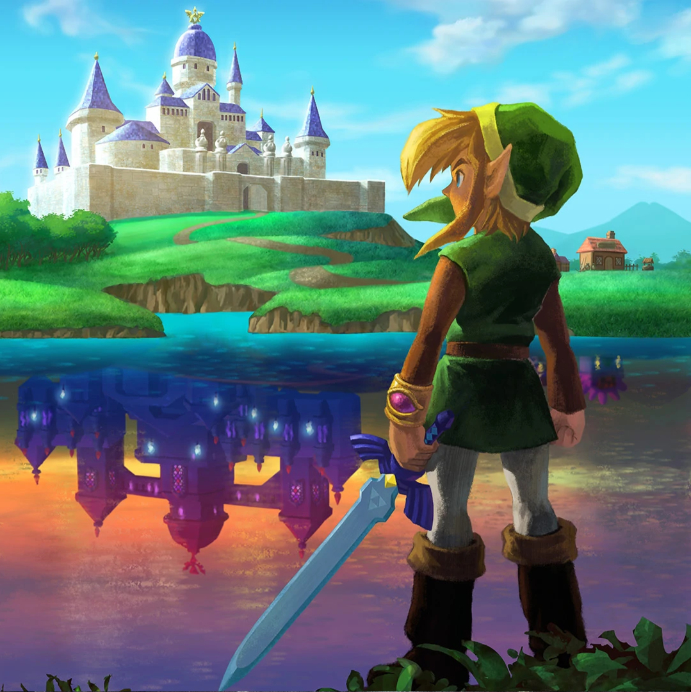
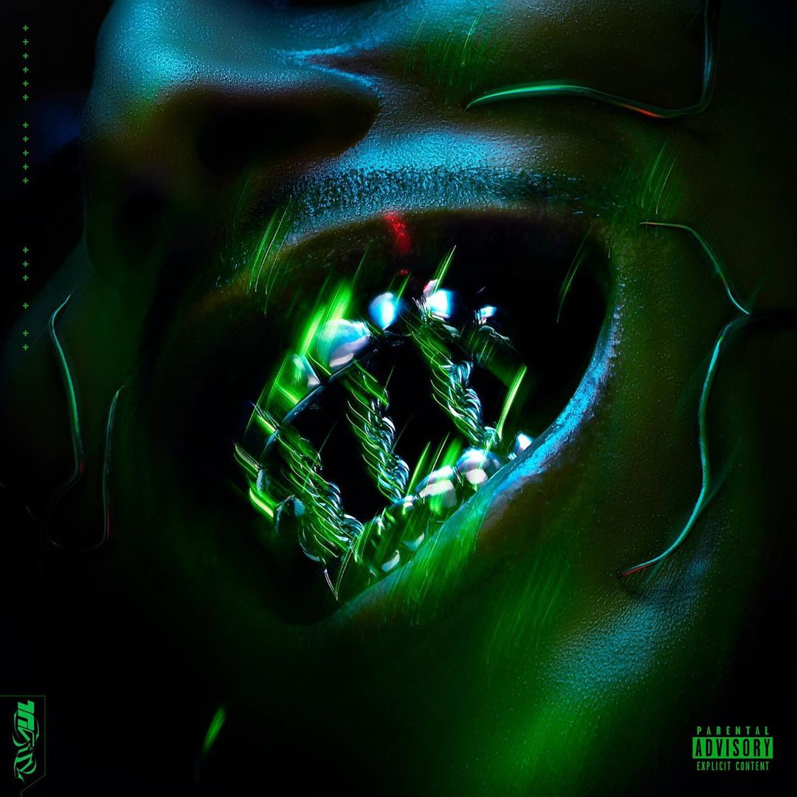

PORTRAIT
CHINOIS
UN PORTRAIT CHINOIS EST UN JEU LITTÉRAIRE CONSISTANT À DÉCRIRE SA PERSONNALITÉ ET SES GOÛTS
À
TRAVERS L'ANALOGIE "SI J'ÉTAIS... JE SERAIS..."
Si j'étais un producteur musical, je serais...
LE MOTIF
Bien qu’il ne soit pas connu du grand public, Olivier Lesnicki alias Le Motif est quelqu’un
d’important dans l’industrie de la musique hip-hop en France.
C’est un artiste polyvalent occupant aussi bien les rôles de beatmaker, producteur ou encore
topliner.
Il a par ailleurs collaboré avec les artistes les plus écoutés du moment et n'hésite pas à
partager son savoir sur la création musicale dévoilant ainsi à un public grandissant de jours en
jours la face cachée de l'industrie musicale.
Si j'étais un personnage de série, je serais...
ARYA STARK
Arya Stark est un des personnages principaux de la série Game of Thrones.
Contrairement à sa grande soeur Sansa, Arya ne rêve pas de devenir une dame de la cour et
préfère apprendre à se servir d'une épée.
Elle se retrouvera rapidement séparée de sa famille et fera preuve d'une grande débrouillardise
afin de la retrouver.
Impitoyable et courageuse, Arya est un personnage ayant beaucoup évolué et arrivant toujours à
ses fins.
Si j'étais un jeu vidéo, je serais...
THE LEGEND OF ZELDA

Grand classique du jeu vidéo, la license The Legend of Zelda nous place dans la peau de Link, un
jeune garçon devant sauver la princesse Zelda.
Chacun des jeux de la license nous propose un univers commun mais très différent. Ces jeux
possèdent en effet des mondes très variés dont les graphismes peuvent être complètement
différents d'un jeu à l'autre.
Qu'on aime les ambiances féeriques ou très sombres, on trouvera toujours un jeu Zelda qui nous
convient.
Si j'étais un album, je serais...
TRINITY

Trinity est le premier album de Laylow, accompagné pour la majorité des titres, du beatmaker
Dioscures.
Inspiré par le film Matrix, Trinity ne se présente pas comme un album mais comme un “logiciel de
stimulation émotionnel”. L’auditeur est donc invité à expérimenter plusieurs formes d’émotions
tout en étant guidé par la voix du logiciel.
Véritable film auditif
aux sonorités futuristes assez rares dans le rap, Trinity est un album extrêmement bien
travaillé ne se contentant pas d'être une simple playlist.
Si j'étais une planète, je serais...
SATURNE
Saturne est une planète géante. C'est la sixième planète du système solaire par ordre de
distance au Soleil et la deuxième plus grosse.
Elle se démarque des autres planètes du système solaire de par son système d'anneaux bien plus
grand que celui des autres planètes.
Cette particularité fait de cette planète la plus intriguante du système solaire bien qu'elle ne
soit pas la planète la plus attrayante en terme de couleurs.
Si j'étais un logiciel, je serais...
FL STUDIO
FL Studio est un logiciel de production musicale utilisé par les plus grands producteurs dont
fait par exemple partie Metro Boomin.
Simple d'apprentissage et pourtant très complet, il permet de composer n'importe quel style de
musique en passant du hip-hop à l'électro.
C'est un logiciel qui permet au beatmaking de se démocratiser et de laisser la possibilité à
n'importe qui étant motivé, d'exprimer sa créativité et son imagination.
Si j'étais un site web, je serais...
YOUTUBE
YouTube est un site web permettant à n'importe qui de poster ou de visionner des vidéos.
C'est un passe-temps incroyable qui a pour beaucoup de personnes remplacé la télévision.
On peut y apprendre énormément de chose grâce aux nombreux tutoriels proposés par les vidéastes,
s'informer ou tout simplement regarder des vidéos plus légères.
Avec une telle diversité de contenus et de vidéastes, on trouve toujours de quoi s'occuper.